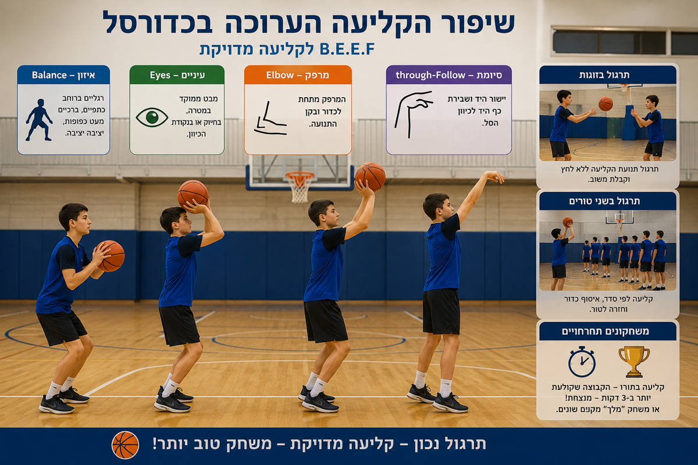
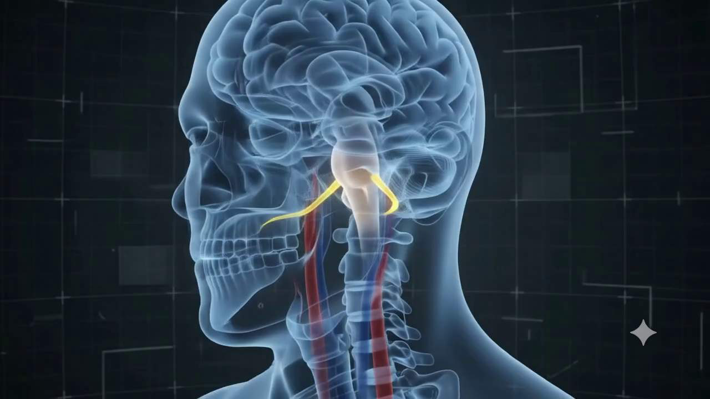

מערך שיעור
שיפור הקליעה הערוכה בכדורסל
מטרת השיעור: התלמידים יתרגלו וישפרו את ביצוע הקליעה הערוכה תוך הקפדה על עמידה נכונה, מיקוד במטרה, מיקום המרפק וסיומת התנועה. השיעור משלב תרגול אישי, עבודה בזוגות ומשחקונים תחרותיים קצרים להפעלה גבוהה של כלל התלמידים.

לחצו להגדלהדגשי ביצוע מרכזיים — B.E.E.F
Balance — איזון
רגליים ברוחב כתפיים, ברכיים מעט כפופות ויציבה יציבה.
Eyes — עיניים
מבט ממוקד במטרה, בחישוק או בנקודת הכיוון.
Elbow — מרפק
המרפק מתחת לכדור ובקו התנועה.
Follow-through — סיומת
יישור היד ושבירת כף היד לכיוון הסל.
מהלך השיעור
תופסת מסירות: ארבעה תופסים מחזיקים כדור ומתמסרים ביניהם. תלמיד שנוגע בו הכדור מצטרף לקבוצת התופסים.
מטרה: חימום כללי, העלאת דופק, תנועה במרחב ושיתוף פעולה.
ארגון: התלמידים מפוזרים באולם. המורה מגדיר גבולות ברורים ומוודא תנועה בטוחה.
הסבר קצר והדגמה של קליעה ערוכה לפי דגשי B.E.E.F. לאחר מכן תרגול בזוגות של תנועת הקליעה ללא לחץ, ובהמשך עמידה בשני טורים וביצוע קליעה לפי סדר.
מטרה: למידת הטכניקה, חיזוק תבנית התנועה וקבלת משוב מיידי מהמורה ומהחבר/ה לזוג.
ארגון: הסבר על קו מוגדר מול הסל. מעבר לתרגול בזוגות ולאחר מכן לשני טורים מסודרים.
שני הטורים הופכים לקבוצות. כל תלמיד מבצע קליעה ערוכה בתורו. הקבוצה שקולעת יותר קליעות ב־3 דקות מקבלת נקודה.
מטרה: הגברת מוטיבציה, תרגול חוזר של הקליעה הערוכה ושמירה על מעורבות גבוהה.
ארגון: שני טורים מול הסל. לאחר זריקה התלמיד אוסף כדור וחוזר לסוף הטור.
התלמידים עומדים על קווי סימון שונים ומנסים לקלוע מכל קו לפי סדר, עד מרחק גדול יותר.
מטרה: יישום הטכניקה במרחקים משתנים, אתגר אישי ותחרותיות חיובית.
ארגון: עמידה מסודרת לפי תורות. התקדמות לקו הבא לאחר ניסיון/קליעה בהתאם להנחיית המורה.
משחק כדורסל חופשי ומבוקר לשחרור.
מטרה: הנאה, יישום מיומנויות המשחק ושחרור לאחר התרגול.
ארגון: חלוקה לחמישיות. החלפת קבוצה לאחר כל התקפה או לאחר סל.
ישיבה קצרה על הספסל ושאלות סיכום: מהם ארבעת דגשי B.E.E.F? מה עוזר לנו לדייק בקליעה? מה נרצה לשפר בשיעור הבא?
מטרה: בדיקת הבנה, חיזוק מושגים והערכת שליטה ראשונית במיומנות.
ארגון: ישיבה על ספסל, שיחה קצרה וממוקדת.
התאמות ובטיחות
יש להקפיד על מרחקים בין התלמידים בזמן זריקה ואיסוף כדורים, על עמידה מסודרת בטורים ועל מעבר בטוח בין התחנות. לתלמידים מתקשים ניתן לאפשר זריקה ממרחק קצר יותר, ולתלמידים מתקדמים ניתן להוסיף מרחק או יעד ניקוד מאתגר יותר.
חידון אינטראקטיבי
Genially
חידון אינטראקטיבי שנבנה בפלטפורמת Genially. השתתפו בחידון וגלו עד כמה אתם מכירים את הנושא!
החידון כבד וייקח מספר שניות להיטען. אם לא נטען — פתחו אותו בכרטיסייה חדשה
מחזור הדם
סרטון הסברה — CapCut
סרטון הסברה על מחזור הדם, ערוך בפלטפורמת CapCut. הסרטון מציג את תהליך מחזור הדם בגוף האדם בצורה ויזואלית וברורה.
נערך בפלטפורמת CapCut · לצפייה במקור ב-CapCut
מציאות רבודה
סרקו את התמונה באפליקציית Artivive
סרקו את תמונת הסריקה שלמטה באמצעות אפליקציית Artivive — וצפו בהדמיה האנטומית קמה לחיים במציאות רבודה, ישירות מעל התמונה!

תמונת הסריקהאיך משתמשים?
הורידו את אפליקציית Artivive לטלפון (App Store / Google Play)
פתחו את האפליקציה — היא נכנסת ישר למצב סריקה
כוונו את מצלמת הטלפון לתמונת הסריקה שמשמאל
המתינו לרגע — וההדמיה תקום לחיים מעל התמונה!
סרטון אינטראקטיבי
Edpuzzle
סרטון אינטראקטיבי שנבנה בפלטפורמת Edpuzzle. צפו בסרטון וענו על השאלות המוטמעות לאורכו.
ספר דיגיטלי
Book Creator
ספר דיגיטלי שנוצר בפלטפורמת Book Creator. הספר מכיל תכנים מולטימדיאליים, תמונות וטקסט.
אם הספר לא נטען — פתחו אותו בכרטיסייה חדשה